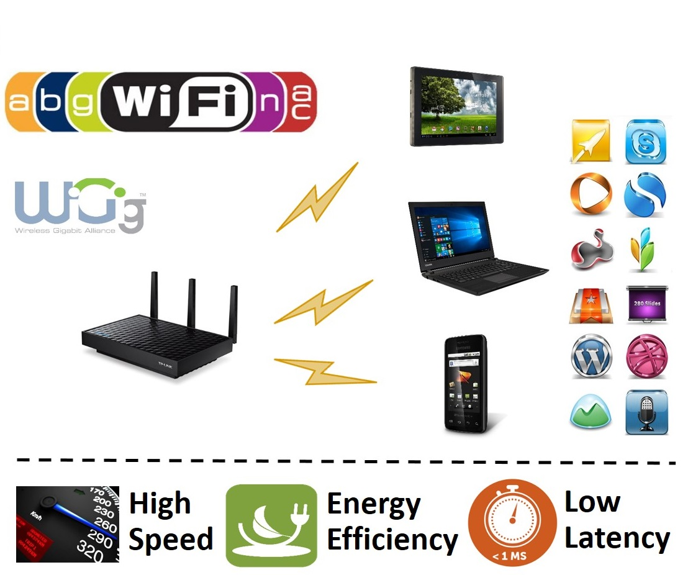
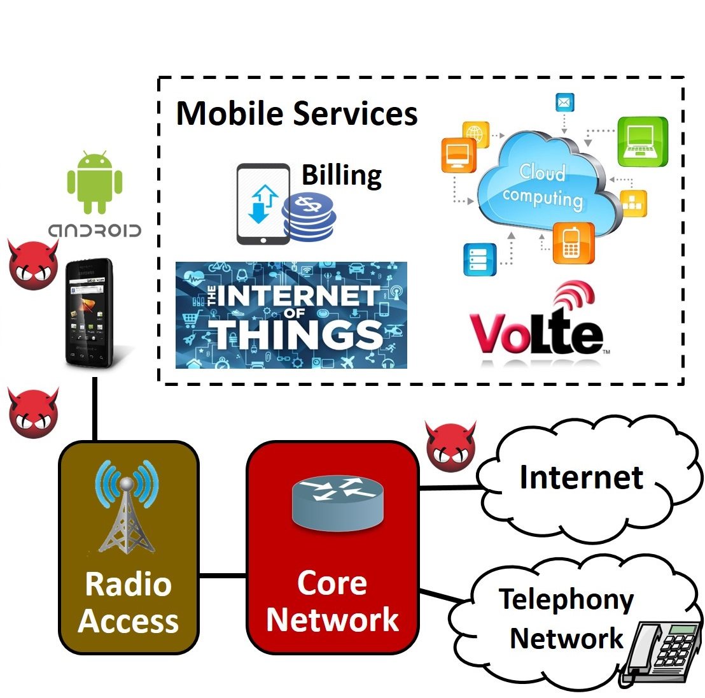

Current Projects
Customizable WiFi
-

As the Wi-Fi technology becomes pervasive in reality, its usage pattern is also turning highly diversified in operation settings and application scenarios. This leads to new design requirements for Wi-Fi networking solutions in terms of various combinations in throughput, latency and energy efficiency. We believe that both the user demand pull and the technology push call for customizable Wi-Fi solutions.
Mobile Security
-

To support various advanced services, the mobile Internet technology is evolving from a simple, working design to a resilient, high-performance networking solution suite. For example, during the evolution from 2G/3G to 4G, the security impact is not fully understood. My research shows that unprecedented malicious attacks can be launched on both mobile devices and the network infrastructure in 3G/4G systems. It is because security loopholes usually lie in the newly offered services (e.g., IoT and D2D) or those legacy ones (e.g., VoLTE) that require new interactions.
Integrated WiFi/WiGig Networking
-
To be updated ...
V2X Networked System
-
To be updated ...
5G Mobile Edge Computing
-
To be updated ...